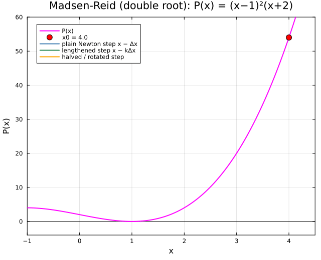
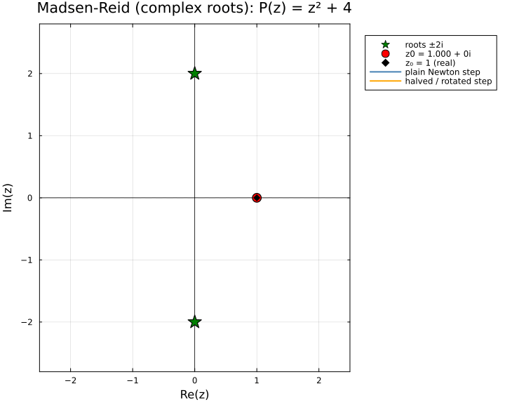

Damped Newton with Acceleration (Madsen-Reid Method)
Description
The Madsen-Reid method (Madsen and Reid 1975) is a robust, globally convergent Newton-based algorithm for finding all roots of a real-coefficient polynomial. This page follows Madsen’s method as implemented by Vestermark: the scripts port the iteration of newton_real (Newton_Real.cpp, Future Team ApS, 2002) with one correction (Stage 2, below), and the description below is of that implementation. It combines three complementary ideas into a single, practical solver:
1. Lengthened steps at multiple roots
Standard Newton-Raphson degrades to linear convergence at a root of multiplicity \(m > 1\) because \(f'(x^*) = 0\): near the root \(f/f' \approx (x-x^*)/m\), so each Newton step covers only \(1/m\) of the remaining distance and the error shrinks by the factor \((m-1)/m\) per step. Madsen-Reid counters this by taking multiple steps in the same direction: in Stage 1 (below), when the Newton point \(z - \Delta z\) does not increase \(|f|^2\), it also tries \(z - 2\Delta z,\ z - 3\Delta z, \dots\) (up to \(z - (n+1)\,\Delta z\) for a polynomial of degree \(n\)), stops at the first trial that does not lower \(|f|^2\), and keeps the trial before it. Near a root of multiplicity \(m\) that point is \(z - m\,\Delta z\), the multiplicity-corrected Newton step, so the convergence to a multiple root is quadratic while the iteration stays in Stage 1 (in Case 2, until rounding error takes over). Only Stage 1 searches, though: Stage 2 takes plain Newton steps, which are linear at a multiple root. Near a double root the two sides of the stage test (below) tend to equality, so whether a run stays in Stage 1 depends on the run. Case 2 stays in Stage 1 throughout. Started at \(x_0 = -0.7\) instead of 4, the same polynomial takes a plain Newton step past the root to \(x_1 \approx 1.7556\), then one Stage-2 step to \(x_2 \approx 1.4123\) (the error falls from 0.76 to 0.41). The stage test then fails (its left side is 1.24 times its right side), and three lengthened Stage-1 steps with \(k = 2\) take the error to \(2.3 \times 10^{-2}\), \(9.1 \times 10^{-5}\) and \(1.4 \times 10^{-9}\), where the computed \(|f|^2\) is exactly 0 and the run stops after 5 steps.
In general, at a simple root (\(f'(x^*) \neq 0\)) the trial point \(z - 2\Delta z\) lands about as far from the root as \(z\), on the other side, so near the root the search keeps \(k = 1\), no halving is needed, and the steps are plain Newton steps, which converge quadratically. Case 1 shows it: from step 3 on, each error divided by the square of the one before is 0.67, 0.74 and 0.74, approaching \(P''(x^*)/\bigl(2P'(x^*)\bigr) \approx 0.742\).
A separate safeguard limits the Newton step to length \(r_0\), which is reset after each Newton step to five times that step’s length before the cap:
\[r_0 \leftarrow 5\,|\Delta z|\]
A Newton step longer than \(r_0\) is cut to length \(r_0\) and rotated by \(53.13°\) by alterdirection (below); a rotation would take Cases 1 and 2 off the real axis, and their scripts stop with an error if one occurs. No Newton step in the three animations is longer than \(r_0\), so the cap never acts.
2. Safety — the two stages
Away from the saddle-point and rounding-error branches described below, every step moves from \(z\) to one of these points, where \(n\) is the polynomial’s degree and \(\Delta z\) is the Newton step, cut and rotated if it is longer than \(r_0\):
\[ \Delta z = \frac{f(z)}{f'(z)}, \qquad z - k\,\Delta z \ \ (k = 1, 2, \dots, n + 1), \qquad z - \tfrac12\,\Delta z, \qquad z - \tfrac{0.6 + 0.8i}{8}\,\Delta z \]
The second are the plain (\(k = 1\)) and lengthened steps, the third is the halved step and the fourth is the rotated step; Stage 2 takes only \(k = 1\).
Each iteration computes the Newton step \(\Delta z = f(z)/f'(z)\), caps it at \(r_0\), and takes it in one of two stages:
- Stage 1 (checked steps) compares \(|f|^2\) at trial points along the step. If \(z - \Delta z\) does not increase \(|f|^2\), the lengthening search above runs. If it does, the step is halved, and each halving is kept only while it lowers \(|f|^2\) below the previous trial. If two halvings both help, the iterate is taken to be near a saddle point:
alterdirectionrotates the step by \(53.13°\) and halves it once more (multiplication by \(0.5\,(0.6 + 0.8i)\)), and that point is accepted. The rotation makes the step complex, so it can only be shown in Case 3. - Stage 2 (plain Newton) takes \(z - \Delta z\) with no trial points, and ends the run once \(|f(z)|\) is no larger than Adams’ bound on the rounding error of \(f(z)\). It is used only when the previous step was a plain Newton step (the Stage-1 search left it unchanged) and the test \(2\,|f(z_k)|\,|w| \le |f'(z_k)|^2\,|z_{k-1} - z_k|\) passes. Here \(w = f'(z_{k-1}) - f'(z_k)\), so \(w/(z_{k-1} - z_k)\) estimates \(f''\) and the test estimates Kantorovich’s condition \(2|f|\,|f''| \le |f'|^2\) for Newton’s method to converge. The scripts follow
newton_realexcept in one line: after each step they store the derivative \(f'(z_{k-1})\) for \(w\), as Madsen and Reid’s test (2.9) requires (Madsen and Reid 1975) and the reference’s own initial value \(f'(0)\) implies, wherenewton_realstores \(f(z_{k-1})\).
Two further branches handle a true saddle point (\(f'(z) = 0\): the previous step is rotated by \(53.13°\) and lengthened 5 times) and the rounding-error domain (when a Newton step shorter than \(2^{-26}|z|\) does not lower \(|f|^2\), it is retried from its starting point, rotated and halved). Neither is reached in the three animations.
The two-stage structure is designed to make \(|f(z)|^2\) decrease at every step, without requiring a full line search. It is not a guarantee: each halving is compared with the previous trial rather than with \(|f(z_k)|^2\), the rotated step is accepted without a check, and Stage-2 steps are not checked at all. In all three animations below \(|f|^2\) does decrease at every step.
3. Efficiency — minimizing function evaluations
Higher-order methods (Halley’s, Householder’s) achieve cubic or higher convergence but require evaluating \(f''\), \(f'''\), etc. Madsen-Reid achieves rapid convergence using only \(f\) and \(f'\) — the same derivatives as plain Newton, plus a few extra evaluations of \(f\) at the trial points — while the acceleration mechanism and dual-stage control make it far more reliable than unguarded Newton on difficult polynomials.
After each root is found, the polynomial is deflated (divided out), reducing the degree by 1 (real root) or 2 (complex conjugate pair), until the remaining linear or quadratic factor is solved analytically.
Note on generalization: Only part of this structure carries over to equations that are not polynomials. For a real equation \(f(x) = 0\), the descent test on \(|f|^2\), the lengthening and halving of the Newton step and the Kantorovich-style switch to plain Newton need only \(f\) and \(f'\) in real arithmetic; Cases 1 and 2 never leave the real axis. The lengthening bound \(n + 1\) and Adams’ stopping bound come from the polynomial’s degree and coefficients, so a general \(f\) needs its own. The \(53.13°\) rotation multiplies the step by the complex number \(0.6 + 0.8i\), so it needs an \(f\) that can be evaluated off the real axis, as a polynomial can (Case 3 uses it); it has no counterpart for a real equation on the real axis, and the method defines none for a system \(\mathbf{F}(\mathbf{x}) = \mathbf{0}\).
Newton-Raphson is the step every stage starts from, Accelerated and Modified Newton-Raphson restores quadratic convergence at a multiple root, in one of its two forms by multiplying the step by a known multiplicity \(m\) that the lengthening search here finds for itself, Halley’s Method uses \(f''\) to converge cubically at simple roots, and the Lin-Bairstow Method and Graeffe’s Method also find all the roots of a polynomial.
Animations
Each animation shows the iteration path of the Madsen-Reid method. Blue segments are plain Newton steps \(z - \Delta z\); green segments are lengthened steps \(z - k\,\Delta z\) with \(k \ge 2\), drawn as the tangent line down to the Newton point and then along the axis; orange segments are halved or rotated steps. The label of the current point names the stage of the step that reached it. Cases 1 and 2 start from their own \(x_0\) with \(r_0 = 5|x_0|\) rather than from the reference’s start-point rule; Case 3 starts where the reference does. In Case 3, star markers show the exact roots.
Julia source scripts that generated these animations are linked under each case.
Case 1 — Simple root, \(P(x) = x^3 - 3x - 1\), \(x_0 = 3.0\)
Behavior: Three simple real roots exist. Starting from \(x_0 = 3.0\), the doubled step reduces \(|P|^2\) more than the Newton step does, and the tripled step does not (\(|P|^2\) = 17.3, 3.17 and 8.73 for \(\Delta x\), \(2\Delta x\) and \(3\Delta x\)), so the first move is the lengthened step \(x_1 = x_0 - 2\Delta x \approx 1.5833\) (green), which passes the root. Every later step is a plain Newton step (blue): step 2 is checked in Stage 1, and steps 3 to 6 are Stage-2 steps. No step is halved. Because \(P'(x^*) \neq 0\), the convergence to the root \(x^* \approx 1.8794\) is quadratic: the error falls \(9.8 \times 10^{-2}\), \(6.4 \times 10^{-3}\), \(3.0 \times 10^{-5}\), \(6.7 \times 10^{-10}\) over steps 2 to 5, and \(x_6\) equals \(x^*\) to double precision; there \(|P|\) is below Adams’ bound and the run stops.

Case 2 — Double root, \(P(x) = (x-1)^2(x+2)\), \(x_0 = 4.0\)
Behavior: \(P(x)\) has a double root at \(x^* = 1\) where \(P'(x^*) = 0\). Standard Newton-Raphson converges only linearly here: from \(x_0 = 4\) its error roughly halves each step and is still \(3.4 \times 10^{-4}\) after 14 steps. Madsen-Reid takes a lengthened step every time (all green, all in Stage 1: the run starts in Stage 1, and a lengthened step never leads to Stage 2): \(3\Delta x\) to \(x_1 = 0.4\), past the root, then \(2\Delta x\), the multiplicity-corrected step for \(m = 2\), four times. The errors \(8.6 \times 10^{-2}\), \(1.2 \times 10^{-3}\), \(2.3 \times 10^{-7}\) of \(x_2\) to \(x_4\) fall quadratically. The fifth step reaches \(x_5 \approx 0.99999999952\) (error \(4.8 \times 10^{-10}\)), where rounding makes the computed \(|P(x_5)|^2\) exactly 0 (its true value is about \(4.8 \times 10^{-37}\)), so the run stops. No step is halved. From \(x_2\) on, the window zooms in on each new step, because the steps shrink from \(0.69\) to \(2.3 \times 10^{-7}\) in \(x\); each zoomed frame shows the tangent reaching the axis halfway along the step, then the second \(\Delta x\) along the axis.

Case 3 — Complex conjugate roots, \(P(z) = z^2 + 4\), \(z_0 = 1 + 0i\)
Behavior: The roots are \(z^* = \pm 2i\) — there are no real roots. The reference solves a quadratic in closed form, so this case runs its iteration loop on \(z^2 + 4\) directly, from the reference’s own start \(z_0 = 1\) with \(r_0 = 5\). The full Newton step to \(-1.5\) increases \(|P|^2\) (39.1 against 25), and one halving reaches \(z_1 = -0.25\) (a second halving, to \(0.375\), does not help). At \(z_1\) the full step to \(7.875\) increases \(|P|^2\) again, and two halvings both help (to \(3.8125\), then \(1.78125\)), so alterdirection rotates the step and halves it once more: \(z_2 = 0.359375 + 0.8125i\), off the real axis. Orange segments are the halved steps 1 and 3 and the rotated step 2. Step 4 is a plain Newton step checked in Stage 1, and steps 5 to 8 are Stage-2 plain Newton steps (blue), converging quadratically to \(z^* = +2i\); the run stops at \(z_8\), where \(|P| \approx 3.2 \times 10^{-30}\) is below Adams’ bound. No lengthened step occurs. The path is a polyline. This case illustrates how the algorithm handles polynomials with no real roots starting from a real initial guess.
